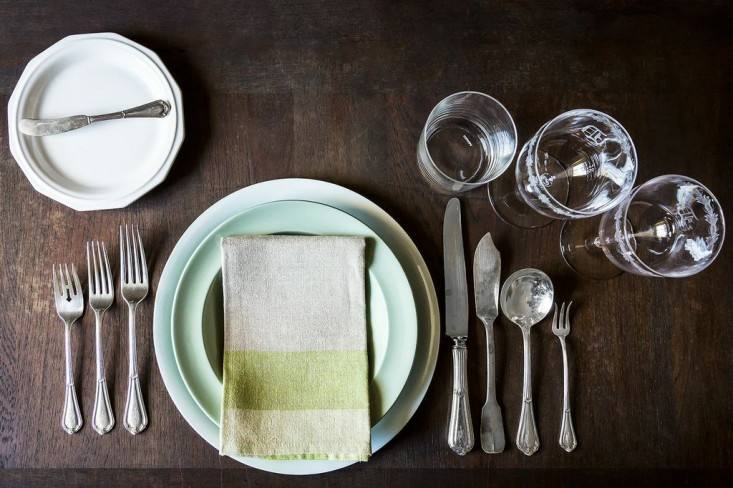

<!-- We don't need full layout here, because this page will be parsed with Ajax-->
<!-- Top Navbar-->

<div class="pages">
  <!-- Page, data-page contains page name-->
  <div data-page="about" class="page">
    <!-- Scrollable page content-->
    <div class="page-content">
      <div class="navbar">
  <div class="navbar-inner">
    <div class="left"><a href="#" class="back link"> <i class="icon icon-back"></i><span>Back</span></a></div>
    <div class="center sliding"> </div>
    <div class="right">
      <!-- Right link contains only icon - additional "icon-only" class--><a href="#" class="link icon-only open-panel"> <i class="icon icon-bars"></i></a>
    </div>
  </div>
</div>
      <div class="content-block presentcon">
    
    <div class="row no-gutter">
        <div class="col-100">

        </div>
    </div>
    <h4>
        
 يقال أن العين تأكل قبل الفم. فعلى الرغم من أن الأساس في الأكل هو طعمه إلا أن طريقة تقديمه تلعب دوراً لا يستهان به. لهذا نقدم لكِ أساسيات ترتيب السفرة وتقديم الطعام.

كيف ترتبين أدوات الطعام على السفرة؟

احرصي على وضع أدوات الطعام في مكان يبعد عن حافة المائدة بقدر معقول-
<br>
	احرصي أن تكون المسافة بين كل طبق والذي بجانبه كافية بحيث يستطيع الضيف أن يسند يده-	
<br>

	توضع الشوك على يسار الطبق والسكاكين والملاعق على يمينه-
<br>

	توضع الشوك والملاعق وجهها لأعلى، والسكاكين بحيث يكون سلاحها مواجهاً للطبق-	
<br>

	تأكدي أن أيادي الأدوات الفضية تقع على خط واحد-
<br>

	إذا كنتِ ستضعين أدوات تناول الحلويات في نفس وقت الوجبة الرئيسية فتوضع أعلى الطبق-

<br>

	الفوطة توضع على يسار الشوك-

    </h4>
      </div>
    </div>
  </div>
</div>